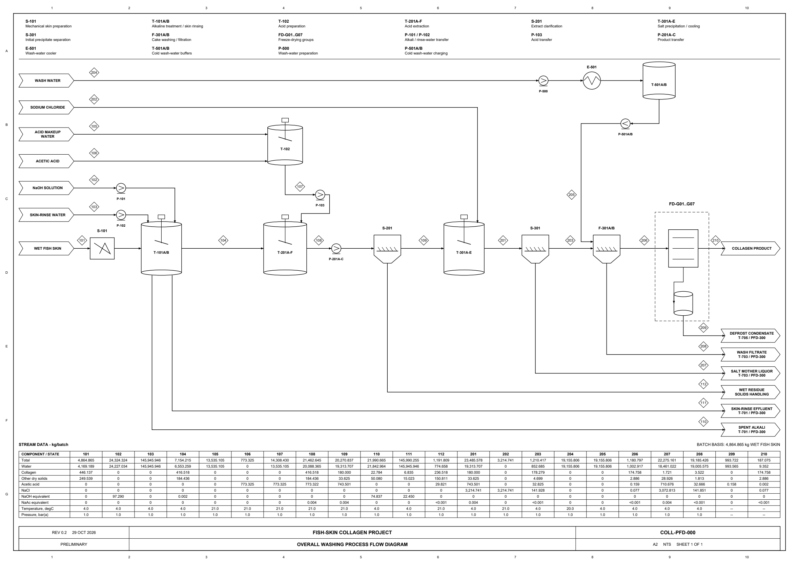

Collagen process and plant design
Fish-skin collagen: Washing and Dialysis routes, equipment sizing, refrigeration, piping and batch scheduling.

| Revision 021 basis | Value |
|---|---|
| Campaign | 1145 lots/y |
| Contained collagen | ≈200.10 t/y |
| Powder | ≈214.20 t/y |
| Freeze-dryer cabinets | 21 |
Result scope
Revision 021 uses the frozen Washing process at 18 native batches per lot. The full same-output industrial Dialysis comparison remains open. Equipment costs are conditional, unquoted scenarios. The earlier PFD does not certify the latest equipment arrangement.